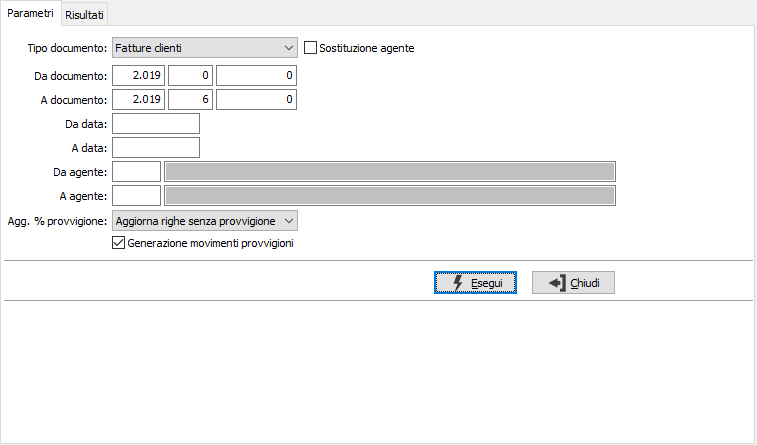
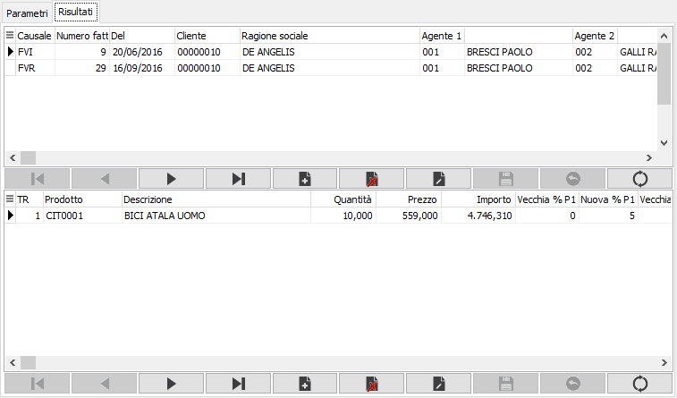

Rigenerazione provvigioni
La procedura consente di riassegnare alle righe dei documenti la percentuale di provvigione e/o rigenerare i movimenti.

TIPO DOCUMENTO: definisce il tipo documento per cui rigenerare le provvigioni: fatture clienti, Ddt clienti, ordini clienti, offerte clienti, vendite al dettaglio.
SOSTITUZIONE AGENTE: se spuntata questa casella sarà possibile effettuare il cambio di agente, di testa o di rigo in base alla configurazione, per ogni documento presente nei risultati in modo interattivo.
DA DOCUMENTO: tre campi per contenere rispettivamente anno, serie sezionale e numero del documento da cui si vuole iniziare la selezione. Confermando a vuoto, la selezione inizia dal primo documento compatibile con i successivi parametri.
A DOCUMENTO: tre campi per contenere rispettivamente anno, serie sezionale e numero del documento con cui si vuole concludere la selezione. Confermando a vuoto, la selezione termina con l’ultimo documento compatibile con i successivi parametri.
DA DATA: eventuale data da cui deve iniziare l’analisi dei documenti relativamente ai precedenti parametri di selezione. Confermando a vuoto, l’analisi inizia con il primo documento valido.
A DATA: eventuale data con cui si desidera terminare l’analisi dei documenti relativamente ai precedenti parametri di selezione. Confermando a vuoto, l’analisi si conclude con l'ultimo documento valido.
DA AGENTE: codice dell'agente da cui si intende iniziare la selezione; confermando a vuoto la selezione inizia dal primo codice valido. Sul campo sono attive le funzioni di ricerca (F9).
A AGENTE: codice dell'agente con cui si intende concludere la selezione; confermando a vuoto la selezione termina con l’ultimo codice valido. Sul campo sono attive le funzioni di ricerca (F9).
AGGIORNA % PROVVIGIONE: definisce se e come aggiornare le percentuali di provvigione sulle righe documento: nessun aggiornamento, aggiorna righe senza provvigione, aggiorna tutte le righe diverse oppure aggiorna tutte le righe.
GENERAZIONE MOVIMENTI PROVVIGIONI: definisce se effettuare la generazione dei movimenti provvigioni (casella con segno di spunta).
La pressione sul pulsante Esegui inizia la selezione e visualizza i documenti da aggiornare nella pagina risultati suddivisi in due sezioni: quella superiore visualizza il documento, quella inferiore ne visualizza le righe; se alcuni non devono essere contemplati dall'elaborazione è possibile cancellarli; tutto il documento o singole righe.

La pressione sul pulsante Esegui inizia la selezione e visualizza i documenti da aggiornare nella pagina risultati suddivisi in due sezioni: quella superiore visualizza il documento, quella inferiore ne visualizza le righe; se alcuni non devono essere contemplati dall'elaborazione è possibile cancellarli; tutto il documento o singole righe.
Nel caso si stia effettuando una sostituzione agente compariranno i campi relativi ai nuovi codici agenti, sulle teste o sulle righe in base alla configurazione; compilando i campi dove si desidera cambiare l'agente saranno anche ricalcolate le provvigioni.